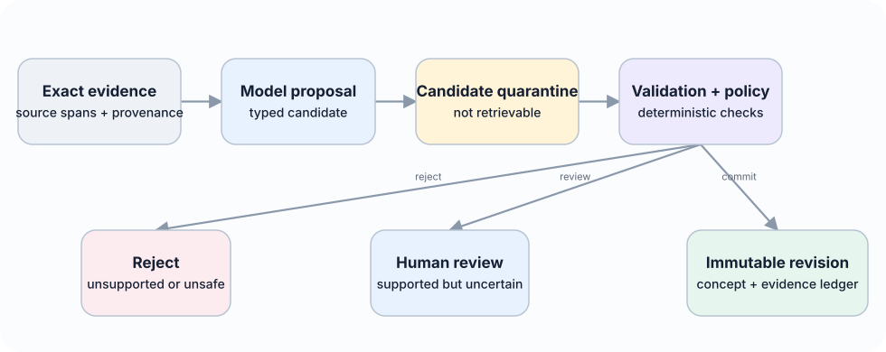

Living paper
6. Data Model and Public Interfaces

6.1 Core entities
Entity Purpose Required fields Episode Immutable record of a bounded experience ID, event time, observed time, context, observation, action, outcome, source, access metadata Association Typed relation between episodes or knowledge objects source ID, target ID, relation type, score, method, provenance Reflection Provisional interpretation or question statement, type, scope, support, counterevidence, uncertainty, status Concept Reusable versioned knowledge object proposition, scope, conditions, implication, support, counterevidence, confidence, validity, version, lifecycle state SkillVersion Proposed immutable reusable capability skill ID and version, preconditions, scope, implementation or instruction, tests, lineage, approvals, rollback metadata ApplicationReceipt Immutable record of concept or skill use task, exact concept and skill versions, retrieved episodes, decision, validator, cost, timestamp Outcome Evidence about application result reward or judgement, independent source, reliability, delay, linked application receipt AuditEvent Immutable record of system change actor, operation, object, prior version, new version, method, timestamp
6.2 Concept states
- proposed: generated and valid enough to test, but not yet strongly supported;
- corroborated: meets evidence and validation thresholds;
- contested: important unresolved counterevidence exists;
- revised: a new immutable version has been created in response to changed evidence and is awaiting or recording validation;
- superseded: replaced by a newer or more precise concept;
- retired: no longer eligible for ordinary retrieval;
- deleted: content removed under deletion policy, with only non-sensitive structural audit metadata retained where legally permitted.
A revision never overwrites its parent. A revised version can later become corroborated, contested, superseded, retired, or deleted while its lineage remains traceable.
6.3 API contract
The reference implementation exposes the following model-independent operations: record_episode(episode) -> EpisodeID associate(episode_id, policy) -> list[Association] run_reflection(scope, trigger) -> list[Reflection] reconcile_concepts(reflection_ids) -> list[ConceptVersion] retrieve_learning(query, context, budget) -> LearningPacket record_application(packet, decision) -> ApplicationID record_outcome(application_id, outcome) -> list[ConceptUpdate] propose_skill(experience_ids, policy) -> list[SkillVersion] record_skill_application(skill_version_id, receipt) -> ApplicationID explain_concept(concept_id, version=None) -> EvidenceReport delete_subject_data(subject_id, policy) -> DeletionReport
LearningPacket is the central read object. It contains concepts, relevant evidence, conflicts, and budget accounting. It never contains only a naked concept statement.
6.4 Storage independence
The core schema is storage-neutral. The starter implementation uses an in-memory store; a SQLite adapter is planned as the first persistent baseline. Production adapters may add PostgreSQL, a vector index, or a graph database. Storage choices are evaluated by correctness, write cost, query latency, deletion support, and operational simplicity rather than by architectural fashion.
The same principle applies to model providers. The engine depends on a structured-generation interface, not a vendor SDK. Reproducibility experiments use open-weight models, while optional adapters may support hosted models for comparison.
Association, extraction, consolidation, retrieval, and forgetting policies may become configurable or learned, but their outputs remain proposals behind stable typed ports. Deterministic code continues to enforce provenance, workspace isolation, permissions, deletion, schema validity, and canonical commit rules. Competing lexical, vector, graph, temporal, probabilistic, and model-driven policies remain interchangeable experimental conditions until evaluation establishes which combination is useful. A Zettelkasten-style linked-note representation may be included as a simple baseline, but static note linking is too limited to govern temporal change, uncertainty, counterevidence, outcome feedback, and user control.